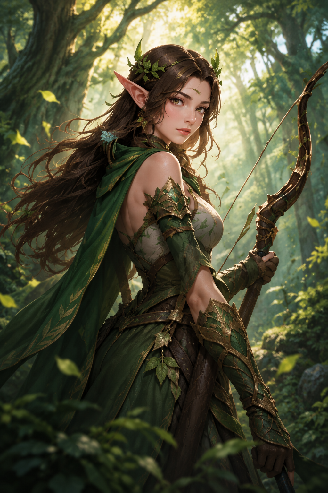
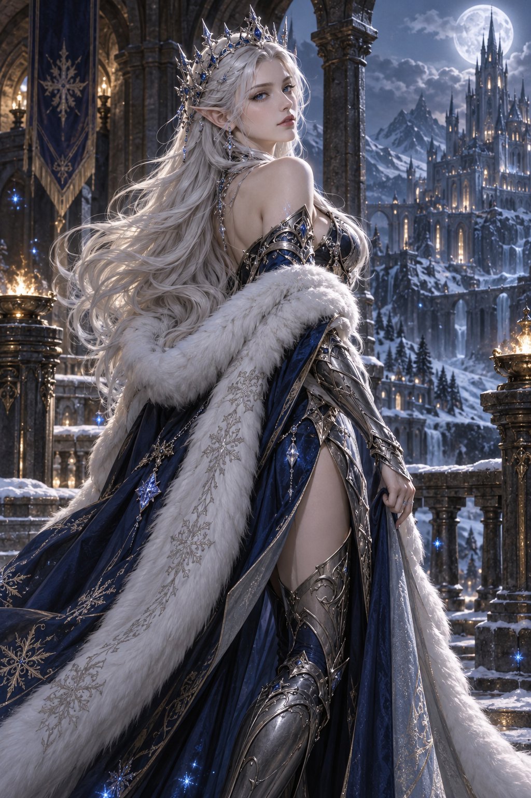

BEFORE · 換裝前原版英雄 · 精靈奧術法師
森語者・希爾芙
翠綠披風 ／ 棕色長髮 ／ 原版選角立繪
HEROES REIMAGINED
先選英雄，再選他的造型，開始換裝前後比較。
選一位英雄，試穿他的全新造型。
此頁為獨立試裝，不消耗水晶。
請先選擇一位英雄。

BEFORE · 換裝前翠綠披風 ／ 棕色長髮 ／ 原版選角立繪

AFTER · 換裝後霜藍銀甲 ／ 銀白長髮 ／ 雪絨披風
四位英雄皆保留原本身分與能力。此頁只做換裝比較，不消耗試用水晶，也不寫入玩家檔案。
霜華、曜陽、緋月與冥骨帝王可在大廳商城使用試用水晶取得，裝備後套用於正式戰場與選角立繪。雷霆戰王也已加入大廳商城，提供完整四組動作，使用同一玩家檔案保存購買與裝備。
新動作圖仍需逐幀校準；獨立技能特效、召喚物外觀及語音尚未補齊。圖內光效不會改變技能碰撞、傷害、掉落或分數。
查看造型來源與試裝文件